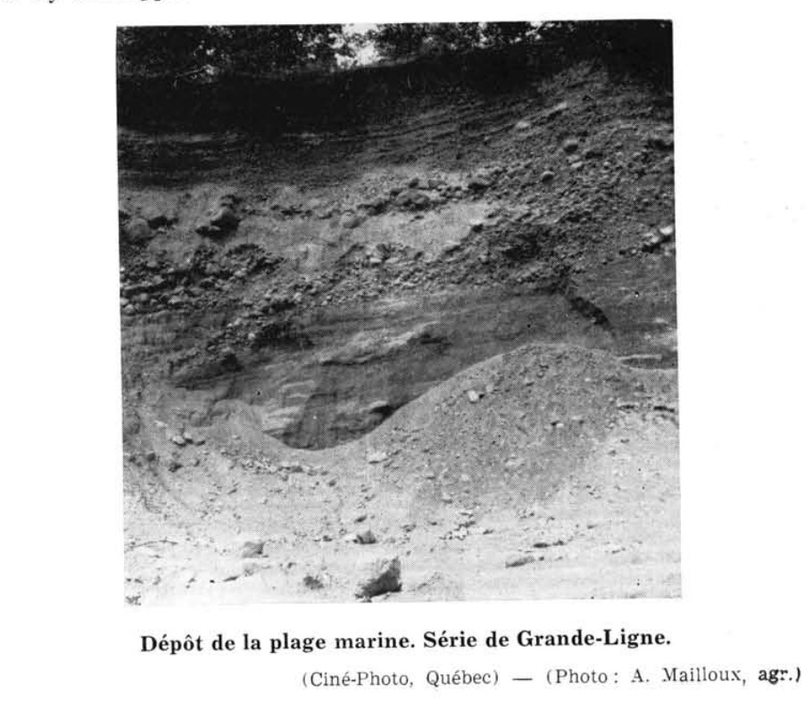

Identification & Caractéristiques Générales
La série de Grande-Ligne se développe sur des dépôts fluvio-glaciaires et littoraux d'origine quaternaire, constitués de sables et de graviers siliceux et polymictiques comprenant des fragments de grès, de quartz, de granits, de gneiss et de schistes. Sur le plan géomorphologique, ces matériaux forment des reliefs caractéristiques de coteaux allongés, de cordons étroits et de buttes isolées au sein des basses-terres du Saint-Laurent. La topographie est inclinée, présentant généralement des pentes variant de douces à modérées (3 à 8 %), pour une élévation moyenne oscillant entre 60 et 120 mètres.
Morphologiquement, le solum montre de fortes variations quant à sa profondeur, à l'épaisseur de ses horizons et à la granulométrie des matériaux, la texture dominante en surface s'établissant comme un loam sableux graveleux. La pierrosité de surface est variable, allant de légère à modérée, avec des secteurs fortement pavés de cailloux et de blocs. Le régime hydrique se caractérise par un drainage naturel excessif, favorisé par une forte perméabilité verticale et une faible rétention en eau utile des matériaux grossiers. La réaction du sol est généralement acide dans la partie supérieure du profil, le substratum profond, lorsqu'il est calcaire, n'exerçant aucune influence chimique directe sur le solum sus-jacent.
Les aptitudes agronomiques des sols de la série de Grande-Ligne sont restreintes par la texture grossière, la pierrosité et le déficit hydrique fréquent en période estivale, ce qui limite le rendement des grandes cultures et des cultures maraîchères. La mise en valeur agricole requiert des interventions spécifiques, notamment un apport régulier de matière organique pour améliorer la rétention en eau, un chaulage correctif pour contrer l'acidité, ainsi que des pratiques rigoureuses de conservation des sols afin de contrer les risques d'érosion hydrique et éolienne sur les pentes. Les secteurs aux pentes prononcées ou aux profils trop graveleux sont avantageusement maintenus sous couvert forestier ou en cultures fourragères permanentes.
Classification Taxonomique & Environnement Pédologique
| Ordre Pédologique | Podzolique |
|---|---|
| Grand Groupe (SCSS) | Podzol humo-ferrique |
| Sous-Groupe Taxonomique | Podzol humo-ferrique orthique |
| Famille Pédologique | Squelettique-sableuse, mixte sableux, acide |
| Mode de Dépôt Parental | Fluvio-glaciaire |
| Classe de Drainage Naturel | Très rapidement drainé |
| Régime Thermique & Humidité | Doux / Aride |
Description Morphologique du Profil Type
Séquences génétiques des horizons pédologiques caractérisant le profil type représentatif de la série Grande-Ligne :
Profil naturel (vierge) — Comté de Châteauguay
✓ Source : Comté de Châteauguay — Page 96Couleur Munsell : Non précisée
Structure & Consistance : Polyédrique à granulaire
Description morphologique : Litière composée de feuilles et de débris végétaux.
Couleur Munsell : 10YR 6/3
Structure & Consistance : Ou structure finement “en miettes” très peu développée
Description morphologique : Gravier à sable limoneux faiblement humifère, de coloration brune à brun pâle à l'état sec, (10YR 6/3). Sans structure ou structure finement “en miettes” très peu développée. Consistance très friable; pH : 5.0 — 6.0.
Couleur Munsell : Non précisée
Structure & Consistance : Polyédrique à granulaire
Description morphologique : Horizon généralement absent ou très mince. Discontinu, de teinte gris-blanc ou cendrée; pH : 5.0.
Couleur Munsell : 10YR 7/4
Structure & Consistance : Ou structure finement “en miettes” très peu développée
Description morphologique : Gravier sableux à sable graveleux, brun, de ton rouge (humide) et brun très pâle (sec) : (10YR 7/4). Sans structure ou structure finement “en miettes” très peu développée. Consistance lâche, perméable. Présente parfois une consistance ferme et indurée en un “Orterde” là où l'Horizon A2 est présent. Réaction ou pH: 5.9.
Couleur Munsell : 10YR 6/6
Structure & Consistance : Polyédrique à granulaire
Description morphologique : Gravier fin et sable grossier, jaune brun (10YR 6/6), sans structure, ouvert et perméable; pH : 6.0.
Couleur Munsell : 10YR 6/4
Structure & Consistance : Polyédrique à granulaire
Description morphologique : Roche-mère : Gravier et sable, brun-jaune clair à l'état sec (10YR 6/4). Consistance lâche, très perméable. Sans structure; pH : 5.7 — 6.4.
Profil représentatif — Comté de Drummond — Phase rocheuse de
✓ Source : Comté de Drummond — Page 91Couleur Munsell : 10YR 4/1, 10YR 2/1
Structure & Consistance : Finement granulée
Description morphologique : Matière organique, gris foncé (10 YR 4/1) à l'état sec, noire (10 YR 2/1) à l'état humide; structure finement granulée, faiblement développée; très friable. La matière organique est intimement mêlée à un sable quartziteux. La réaction (pH 5.4) est fortement acide.
Couleur Munsell : 7.5YR 6/2, 10YR 4/2
Structure & Consistance : Polyédrique à granulaire
Description morphologique : Sable limoneux, gris rose (7.5 YR 6/2) à l'état sec, gris brun foncé (10 YR 4/2) à l'état humide; sans structure, ni consistance. La réaction (pH 4.5) est très fortement acide.
Couleur Munsell : 10YR 6/4, 10YR 4/4
Structure & Consistance : En miettes très faiblement développée
Description morphologique : Sable graveleux, brun jaune clair (10 YR 6/4) à l'état sec, brun jaune foncé (10 YR 4/4) à l'état humide; structure en miettes très faiblement développée; consistance lâche. La réaction (pH 5.1) est fortement acide.
Couleur Munsell : 10YR 6/6, 10YR 4/4
Structure & Consistance : Polyédrique à granulaire
Description morphologique : Gravier sableux, jaune brun (10 YR 6/6) à l'état sec, brun jaune foncé (10 YR 4/4) à l'état humide; sans structure, ni consistance. La réaction (pH 5.2) est fortement acide.
Couleur Munsell : 2.5Y 7/4, 2.5Y 4/4
Structure & Consistance : Polyédrique à granulaire
Description morphologique : Gravier sablo-caillouteux, jaune pâle (2.5 Y 7/4) à l'état sec, olive (2.5 Y 4/4) à l'état humide; sans structure, ni consistance. La réaction (pH 5.3) est fortement acide.
Profil représentatif — Comté de Nicolet
✓ Source : Comté de Nicolet — Page 69Couleur Munsell : Non précisée
Structure & Consistance : Finement granulée et consistance non-cohérente
Description morphologique : Sable et gravier mêlés à la matière organique, brun foncé; structure finement granulée et consistance non-cohérente; pH 5.6.
Couleur Munsell : Non précisée
Structure & Consistance : Polyédrique à granulaire
Description morphologique : Sable gris cendré, sans structure, formant une petite ligne irrégulière; pH 5.3.
Couleur Munsell : Non précisée
Structure & Consistance : Polyédrique à granulaire
Description morphologique : Sable et gravier rocheux, jaune brunâtre; irrégulièrement stratifié et ouvert; pH 6.1.
Couleur Munsell : Non précisée
Structure & Consistance : Polyédrique à granulaire
Description morphologique : Sable et gravier rocheux, jaune clair; irrégulièrement stratifié et ouvert; pH 6.0.
Profil représentatif — Comté de Nicolet
✓ Source : Comté de Nicolet — Page 70Couleur Munsell : Non précisée
Structure & Consistance : Polyédrique à granulaire
Description morphologique : Litière composée de feuilles et de débris végétaux.
Couleur Munsell : Non précisée
Structure & Consistance : Ni consistance
Description morphologique : Gravier sableux à terre franche sablo-graveleuse, brun foncé, faiblement humifère, sans structure ni consistance; pH 5.5-5.8.
Couleur Munsell : Non précisée
Structure & Consistance : Polyédrique à granulaire
Description morphologique : Sable et gravier, gris cendré, déposé en bande sinueuse irrégulière, parfois en poche ou sous forme d'une langue; pH 5.5.
Couleur Munsell : Non précisée
Structure & Consistance : Ni consistance
Description morphologique : Sable graveleux à gravier sableux (parfois schisteux), brun ocre; sans structure ni consistance; parfois légèrement concrétionné et cimenté à la partie immédiatement au-dessous de l'horizon A²; pH 5.5-5.8.
Couleur Munsell : Non précisée
Structure & Consistance : Polyédrique à granulaire
Description morphologique : Sable graveleux à gravier sableux (parfois schisteux), jaune faible, sans consistance; pH 5.7-6.0.
Profil représentatif — Comté de Bagot
✓ Source : Comté de Bagot — Page 40Couleur Munsell : Non précisée
Structure & Consistance : Polyédrique à granulaire
Description morphologique : Couche de débris organiques peu ou pas décomposés. C'est la couche L (du mot anglais: litter) des forestiers.
Couleur Munsell : Non précisée
Structure & Consistance : Dans les gris-bruns podzoliques
Description morphologique : Horizon illuvial ou d'accumulation maximum. C'est l'horizon fortement coloré par l'humus et les sesquioxydes de fer dans le podzol et l'horizon bien développé au double point de vue de la texture et de la structure dans les gris-bruns podzoliques.
Couleur Munsell : Non précisée
Structure & Consistance : Polyédrique à granulaire
Description morphologique : Horizon de passage ou de transition.
Couleur Munsell : Non précisée
Structure & Consistance : Polyédrique à granulaire
Description morphologique : Horizon de Gley. Généralement situé entre A et C. Pour marquer la présence de gley dans un horizon, on accole parfois la lettre g (minuscule) à celle de cet horizon: V.g.: B 2 g.
Couleur Munsell : Non précisée
Structure & Consistance : Polyédrique à granulaire
Description morphologique : Roche-mère ou matériaux géologiques partiellement altérés et non consolidés, qui ont donné naissance au solum. Absent lorsque la vitesse des processus du weathering égale celle des processus d'édification du Solum. Les lettres c ou ca adjointes à celles d'autres horizons, indiquent la présence de carbonates de calcium actifs; ceux-ci sont généralement entre B et C; v.g. Cca ou B 2 ca.
Couleur Munsell : Non précisée
Structure & Consistance : Polyédrique à granulaire
Description morphologique : Substratum géologique non altéré, tel le roc, les couches de sable et d'argile. Quoique considéré comme étranger au profil, il peut avoir une certaine influence dans la formation de celui-ci.
Profil représentatif — Comté de Bagot
✓ Source : Comté de Bagot — Page 44Couleur Munsell : Non précisée
Structure & Consistance : Polyédrique à granulaire
Description morphologique : Feuilles non tassées et débris organiques très peu décomposés; aussi appelé couche "L".
Couleur Munsell : Non précisée
Structure & Consistance : Polyédrique à granulaire
Description morphologique : Horizon de transition apparent à B 2 , de couleur brun à brun jaunâtre ou rougeâtre; accumulation de la matière organique.
Couleur Munsell : Non précisée
Structure & Consistance : Polyédrique à granulaire
Description morphologique : Horizon de transition de couleur gris jaunâtre.
Couleur Munsell : Non précisée
Structure & Consistance : Polyédrique à granulaire
Description morphologique : Matériaux peu ou pas altérés par le processus de formation du sol; les horizons A et B se sont formés aux dépens de matériaux semblables.
Couleur Munsell : Non précisée
Structure & Consistance : Polyédrique à granulaire
Description morphologique : Matériaux géologiques différents de ceux de la roche-mère; peuvent ou ne peuvent pas avoir une influence sur le sol susjacent.
Profil représentatif — Comté de Bagot
✓ Source : Comté de Bagot — Page 52Couleur Munsell : Non précisée
Structure & Consistance : Polyédrique à granulaire
Description morphologique : Feuilles non tassées et débris organiques très peu décomposés; aussi appelé couche "L".
Couleur Munsell : Non précisée
Structure & Consistance : Polyédrique à granulaire
Description morphologique : Horizon, jaune doré à brun jaunâtre, représentant le maximum d'accumulation des sels de fer et d'aluminium; présence d'orterde ou d'ortstein; présence ou absence de mouchetures de rouille.
Couleur Munsell : Non précisée
Structure & Consistance : Polyédrique à granulaire
Description morphologique : Matériaux peu ou pas altérés par le processus de formation du sol; les horizons A et B se sont formés aux dépens de matériaux semblables.
Couleur Munsell : Non précisée
Structure & Consistance : Polyédrique à granulaire
Description morphologique : Matériaux géologiques différents de ceux de la roche-mère; peuvent ou ne peuvent pas avoir une influence sur le sol susjacent.
Profil représentatif — Comté de Bagot
✓ Source : Comté de Bagot — Page 54Couleur Munsell : Non précisée
Structure & Consistance : Polyédrique à granulaire
Description morphologique : Feuilles non tassées et débris organiques très peu décomposés; aussi appelé couche "L"; généralement présent dans les profils vierges, mais pouvant vite disparaître à la chute des feuilles.
Couleur Munsell : Non précisée
Structure & Consistance : Polyédrique à granulaire
Description morphologique : Enchevêtrement de débris organiques partiellement décomposés; aussi appelé couche "F"; généralement moins de deux pouces d'épaisseur.
Couleur Munsell : Non précisée
Structure & Consistance : Polyédrique à granulaire
Description morphologique : Horizon noir composé de matière organique mêlée à la matière minérale; aussi appelé couche "H"; toujours présent.
Couleur Munsell : Non précisée
Structure & Consistance : Polyédrique à granulaire
Description morphologique : Horizon généralement plus pâle que les horizons supérieurs et inférieurs; probablement toujours présent, mais peut être souvent masqué par la matière organique.
Couleur Munsell : Non précisée
Structure & Consistance : Polyédrique à granulaire
Description morphologique : Horizon jaune clair à gris brun; toujours moucheté de rouille, quelquefois peu apparent.
Couleur Munsell : Non précisée
Structure & Consistance : Polyédrique à granulaire
Description morphologique : Horizon gris clair à gris jaunâtre; toujours moucheté de rouille; les limites des horizons inférieurs à A 2 sont toujours très diffuses.
Couleur Munsell : Non précisée
Structure & Consistance : Polyédrique à granulaire
Description morphologique : Matériaux peu ou pas altérés par le processus de formation du sol; les horizons A et B se sont formés aux dépens de matériaux semblables.
Couleur Munsell : Non précisée
Structure & Consistance : Polyédrique à granulaire
Description morphologique : Matériaux géologiques différents de ceux de la roche-mère; peuvent ou ne peuvent pas avoir une influence sur le sol susjacent.
Profil représentatif — Comté de Bagot
✓ Source : Comté de Bagot — Page 141Couleur Munsell : 10YR 6/3, 5YR 3/2
Structure & Consistance : Pas développée consistance friable ph 4
Description morphologique : Loam sablo-graveleux faiblement humifère, brun à brun pâle à l'état sec (10YR 6/3) et brun rouge foncé (5YR 3/2) à l'état humide. Structure pas développée Consistance friable pH 4.9.
Couleur Munsell : Non précisée
Structure & Consistance : Polyédrique à granulaire
Description morphologique : Horizon très mince ou absent. Parfois en poches, gris blanc. pH 4.6.
Couleur Munsell : 10YR 7/4, 5YR 6/3
Structure & Consistance : Polyédrique à granulaire
Description morphologique : Gravier sableux à sable graveleux, brun très pâle à l'état sec (10YR 7/4) et brun rouge pâle à l'état humide (5YR 6/3) Sans structure. Consistance lâche, ouverte. Parfois un peu d'induration. pH 5.2.
Couleur Munsell : 10YR 6/6
Structure & Consistance : Polyédrique à granulaire
Description morphologique : Gravier et sable grossier, jaune-brun à l'état sec (10YR 6/6). Sans structure. Ouvert, perméable. pH 5.3.
Couleur Munsell : 10YR 6/4
Structure & Consistance : Polyédrique à granulaire
Description morphologique : Roche-mère. Gravier et sable interstratifiés, brun-jaune clair à l'état sec (10YR 6/4) et jaune-rougeâtre à l'état humide. Ouvert et très perméable pH 5.5.
Profil représentatif — Comté de Yamaska
✓ Source : Comté de Yamaska — Page 60Couleur Munsell : Non précisée
Structure & Consistance : Finement granulée et consistance friable
Description morphologique : Sable ou limon sableux, brun jaunâtre; structure finement granulée et consistance friable; pH: 5.0.
Couleur Munsell : Non précisée
Structure & Consistance : Polyédrique à granulaire
Description morphologique : Sable gris cendré, très mince et souvent absent.
Couleur Munsell : Non précisée
Structure & Consistance : Ni consistance
Description morphologique : Sable jaunâtre; sans structure ni consistance; pH: 5.5.
Couleur Munsell : Non précisée
Structure & Consistance : Ni consistance
Description morphologique : Sable, jaune faible; sans structure ni consistance; pH: 6.0.
Profil représentatif — Comté de Huntingdon — Phase rocheuse se
✓ Source : Comté de Huntingdon — Page 199Couleur Munsell : Non précisée
Structure & Consistance : Polyédrique à granulaire
Description morphologique : Litière composée de feuilles et de débris végétaux.
Couleur Munsell : 10YR 6/3
Structure & Consistance : Ou structure finement en miettes
Description morphologique : Gravier à sable limoneux, faiblement humifère, brun à brun pâle à l'état sec, (10YR 6/3). Sans structure ou structure finement en miettes, très peu développée. Consistance très friable, pH: 5.0 — 6.0.
Couleur Munsell : Non précisée
Structure & Consistance : Polyédrique à granulaire
Description morphologique : Horizon généralement absent ou très mince. Discontinu, de teinte gris blanc ou cendrée. pH: 5.0.
Couleur Munsell : 10YR 7/4
Structure & Consistance : Ou structure finement en miettes très peu développée
Description morphologique : Gravier sableux à sable graveleux, brun, rougeâtre (humide) et brun très pâle (sec) (10YR 7/4). Sans structure ou structure finement en miettes très peu développée. Consistance lâche, perméable. Présente parfois une consistance ferme et indurée en un "orterde" là où l'horizon A 2 est présent. pH: 5.9.
Couleur Munsell : 10YR 6/6
Structure & Consistance : Polyédrique à granulaire
Description morphologique : Gravier fin et sable grossier, jaune brun (10YR 6/6), sans structure, ouvert et perméable. pH: 6.0.
Couleur Munsell : 10YR 6/4
Structure & Consistance : Polyédrique à granulaire
Description morphologique : Roche-mère, gravier et sable, brun jaune clair à l'état sec (10YR 6/4). Consistance lâche, très perméable. Sans structure. pH: 5.7 — 6.4.
Profils Photographiques & Planches de Terrain
Documents iconographiques, figures pédologiques et coupes de terrain documentées dans les mémoires d'inventaire pour de la série Grande-Ligne :


Propriétés Physico-Chimiques & Analyses de Laboratoire
| Horizon | Prof. (pces/cm) | Sable % | Limon % | Argile % | pH | C % | N % | Ca éch. | Mg éch. | K éch. | H+ éch. | Bases tot. | C.E.C. (meq/100g) | Saturation % | ||
|---|---|---|---|---|---|---|---|---|---|---|---|---|---|---|---|---|
| Couchede surface | Moyenne | 17,2 | 25,1 | 12,3 | 4,0 | 65,0 | 21,1 | 13,9 | 5,8 | 2,38 | 7,7 | 0,58 | 0,24 | 0,07 | 13,56 | 46,5 |
| Inférieure | 11,0 | 18,9 | 8,4 | 2,9 | 58,7 | 16,4 | 11,3 | 5,4 | 2,04 | 6,0 | 0,47 | 0,12 | 0,01 | 11,55 | 22,8 | |
| Supérieure | 23,5 | 31,2 | 16,2 | 5,2 | 71,2 | 25,9 | 16,5 | 6,3 | 2,75 | 9,7 | 0,71 | 0,37 | 0,14 | 15,88 | 93,7 | |
| CV | 44,3 | 29,7 | 38,7 | 35,9 | 11,7 | 27,3 | 22,6 | 9,3 | 10,5 | 11,9 | 19,8 | 57,4 | 102,0 | 6,7 | 21,7 | |
| Classe de contenu** | M | F | F | F | F | M | F | |||||||||
| Sous-sol | N | 3 | 3 | 3 | 3 | 3 | 3 | 3 | 3 | 3 | 3 | 3 | 3 | 3 | 3 | 3 |
| Moyenne | 26,1 | 23,5 | 10,5 | 2,6 | 73,2 | 12,7 | 14,0 | 5,6 | 1,42 | 2,1 | 0,24 | 0,14 | 0,03 | 12,02 | 13,1 | |
| Inférieure | - | 4,5 | 1,6 | 0,0 | 60,7 | 6,5 | 7,7 | 3,9 | 1,01 | 0,0 | 0,00 | 0,00 | 0,00 | 9,76 | 6,5 | |
| Supérieure | 54,0 | 42,4 | 19,4 | 5,4 | 85,7 | 18,9 | 20,4 | 7,3 | 1,92 | 8,4 | 0,65 | 0,25 | 0,10 | 14,75 | 25,6 | |
| Substratum | CV | 63,5 | 47,9 | 50,3 | 62,7 | 10,1 | 28,8 | 26,7 | 18,0 | 12,4 | 57,6 | 76,4 | 43,9 | 120,0 | 4,4 | 14,2 |
| N | 3 | 3 | 3 | 3 | 3 | 3 | 3 | 3 | 3 | 3 | 3 | 3 | 3 | 3 | 3 | |
| Moyenne | 28,8 | 23,9 | 14,3 | 2,3 | 84,0 | 8,8 | 7,2 | 6,0 | 0,39 | 2,7 | 0,33 | 0,09 | 0,07 | 6,96 | 45,3 | |
| Inférieure | 1,0 | 1,8 | 0,0 | 0,5 | 73,9 | 1,8 | 4,1 | 5,1 | 0,00 | 0,7 | 0,02 | 0,04 | 0,00 | 6,03 | 25,2 | |
| Supérieure | 56,7 | 46,1 | 29,0 | 4,1 | 94,1 | 15,9 | 10,2 | 6,9 | 1,12 | 6,9 | 0,74 | 0,15 | 0,14 | 8,01 | 80,7 | |
| CV | 57,3 | 54,9 | 60,8 | 46,0 | 7,1 | 47,4 | 25,4 | 8,8 | 74,6 | 34,4 | 55,6 | 31,6 | 61,5 | 3,5 | 8,8 |
Particularités Régionales, Phases & Variantes Pédologiques
Déclinaisons régionales, faciès texturaux, phases d'érosion ou de pierrosité et variantes cartographiées par étude pour de la série Grande-Ligne :
| Étude Régionale | Symbole | Appellation / Phase / Variante | Différenciation avec la série type (Analyse pédologique) |
|---|---|---|---|
| Comté de Bagot | GLg |
Grande-Ligne gravier sableux | Modalité modale de référence (type de base de la série). |
GLs |
Grande-Ligne sable graveleux | Phase graveleuse à perméabilité accrue et réserve utile diminuée. | |
| Comté de Huntingdon | GL |
Grande Ligne gravier sableux à sable graveleux | Phase graveleuse à perméabilité accrue et réserve utile diminuée. |
GL-R |
Grande Ligne gravier sableux à sable graveleux caillouteux | Phase graveleuse à perméabilité accrue et réserve utile diminuée. | |
| Comté de Châteauguay | GL |
Grande Ligne sable graveleux ou gravier sableux | Phase graveleuse à perméabilité accrue et réserve utile diminuée. |
GL-R |
Grande Ligne sable graveleux ou gravier sableux phase rocheuse | Phase graveleuse à perméabilité accrue et réserve utile diminuée. | |
| Comté de Drummond | GL |
Grande-Ligne gravier sableux | Conforme à la série type de référence (caractéristiques texturales et drainage identiques). |
GLr |
Grande-Ligne gravier sableux et pierreux | Phase pierreuse (abondance de cailloux et blocs en surface). | |
| Comté de Iberville | GLb |
Grande-Ligne squelettique sableux pente de 2-5% | Phase de pente (2-5%) avec risque de ruissellement et d'érosion hydrique accrue. |
| Comté de Laprairie | GL2gbp |
Grande-Ligne loam sableux graveleux 3-8 % de pente légèrement à modérément pierreux | Phase légèrement à modérément pierreuse (obstruction mécanique modérée); Faciès textural de surface loam sableux (distinct du sable de référence). |
| Comté de Napierville | GLbp |
Grande-Ligne 3-8% de pente légèrment pierreux | Phase pierreuse (abondance de cailloux et blocs en surface). |
| Comté de Nicolet | GL |
Grand-Ligne complexe | Conforme à la série type de référence (caractéristiques texturales et drainage identiques). |
GLg |
Grande-Ligne gravier sableux à loam sableux graveleux | Phase graveleuse à perméabilité accrue et réserve utile diminuée; Faciès textural de surface loam sableux (distinct du sable de référence). | |
GLr |
Grande-Ligne sable et gravier rocheux | Phase rocheuse avec affleurements limitant la profondeur utile. | |
GLs |
Grande-Ligne sable à loam sableux | Faciès textural de surface loam sableux (distinct du sable de référence). | |
| Comté de Saint-jean | GLbp |
Grande-Ligne loam sableux graveleux 3-8 % de pente légèrement à modérément pierreux | Phase légèrement à modérément pierreuse (obstruction mécanique modérée); Faciès textural de surface loam sableux (distinct du sable de référence). |
| Comté de Yamaska | GL |
Grand-Ligne complexe | Conforme à la série type de référence (caractéristiques texturales et drainage identiques). |
GLg |
Grande-Ligne gravier sableux à loam sableux graveleux | Phase graveleuse à perméabilité accrue et réserve utile diminuée; Faciès textural de surface loam sableux (distinct du sable de référence). | |
GLs |
Grande-Ligne sable | Conforme à la série type de référence (caractéristiques texturales et drainage identiques). | |
| Comté de St-jean | GDG |
GRANDE-LIGNE (GL) | Conforme à la série type de référence (caractéristiques texturales et drainage identiques). |
Distribution Pédo-Paysagère & Représentativité Cartographique (Couverture PPS 2026)
- Saint-Sylvère loam sableux (SYV) — co-occurrente dans 29 polygone(s)
- Ménard sableux graveleux (MEN) — co-occurrente dans 28 polygone(s)
- Napierville loam sableux 3-8 % de pente légèrement à modérément pierreux (NPV) — co-occurrente dans 28 polygone(s)
Aptitudes Agronomiques, Hydropédologie & Conservation des Sols
Indicateurs Hydropédologiques & Vulnérabilité à l'Érosion (BDHP 2026)
Interprétation BDHP : Potentiel de ruissellement faible. Sols à infiltration rapide (sables profonds, graviers bien drainés).
Classement selon l'Inventaire des Terres du Canada (ITC / CLI) : Classe 3w.
- Potentiel agricole : Terroir adapté aux cultures régionales selon la texture dominante et la régie de drainage.
- Contraintes majeures : Très rapidement drainé. Risque d'engorgement temporaire ou d'excès d'eau printanier.
- Gestion & Aménagement : Drainage souterrain ou superficiel préconisé sur les terres planes. Chaulage et apport organique régulier selon les bilans agronomiques.
- Cultures adaptées : Grandes cultures (maïs, soya, céréales), prairies fourragères et cultures maraîchères selon le contexte géomorphologique.